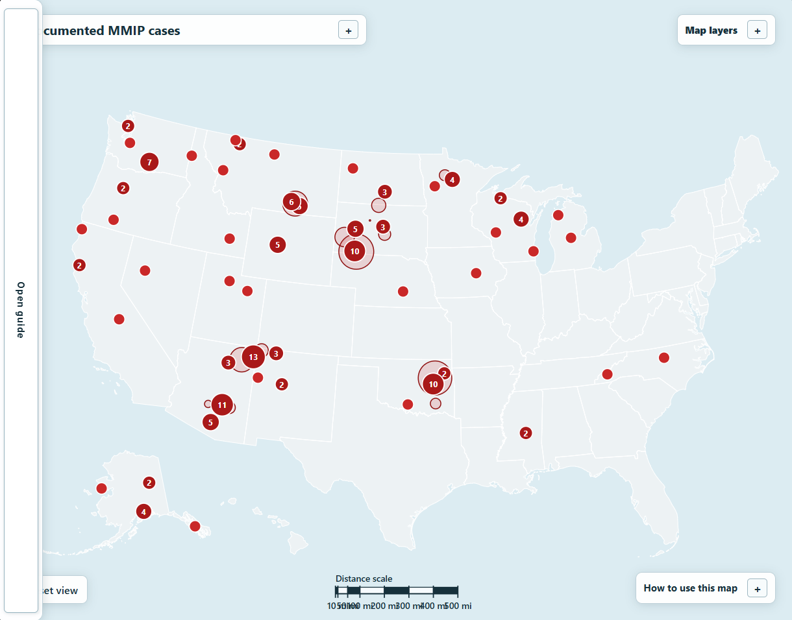
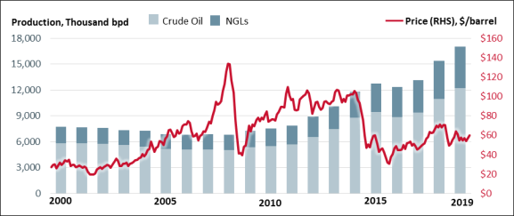
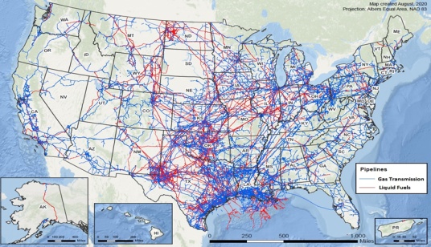
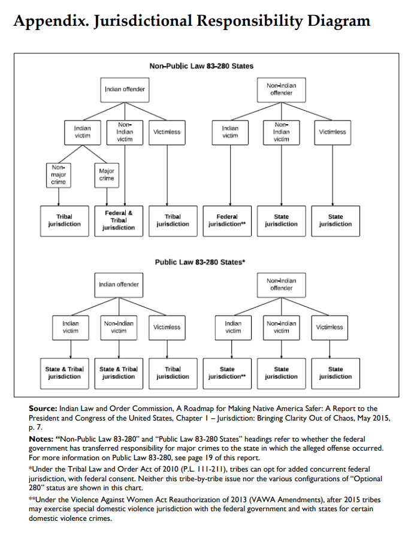
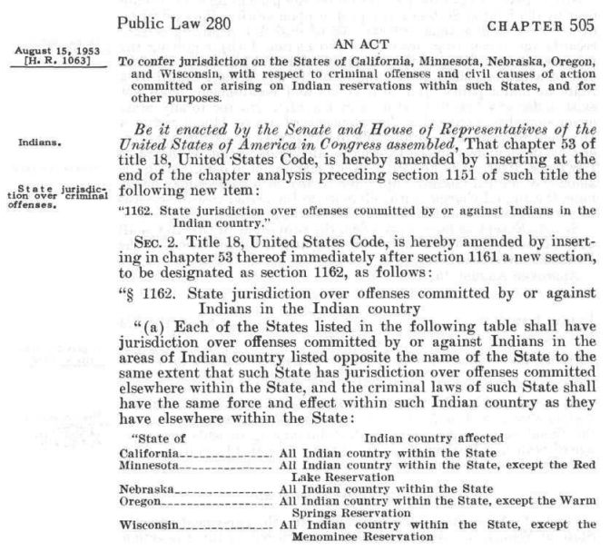

Oil, Sweat, and Tears
What the correlation – and lack thereof – between the missing and murdered Indigenous persons crisis (MMIP) and resource extraction could mean.
Crisis Overview (Map Showing Only Cases)
- Most missing and unidentified cases involving Indigenous persons occur off tribal land, meaning that many violent victimizations of Indigenous persons may also occur off tribal lands (Hanson, 2023, p.17). Therefore, the crisis is not restricted to just Indigenous communities, but a national problem.
- While Indigenous persons living off tribal lands can access federal victim services resources for Indigenous individuals, many of such resources are directed towards tribal communities (Hanson, 2023, p.17). When considering how most Indigenous persons live off-reservation and that many missing persons cases happen off tribal lands, these resources are insufficient.
- There are many resources to help law enforcement pursue MMIP cases like the National Crime Information Center and the National Missing and Unidentified Persons System, but their gaps in available data fail to provide a comprehensive picture of the crisis (Hanson, 2023, p.2). So, many cases go unreported and thus, not pursued.
- In recent years, the federal government has launched initiatives to improve federal, state, and tribal law enforcement coordination like the Operation Lady Justice Task Force and passed legislation to improve MMIP data collection like Savanna's Act in 2020 (Hanson, 2023, pp.23-26). This is a step in the right direction, but one of the most crucial factors that inhibits justice is not the lack of data or law enforcement coordination. It is the contested legal jurisdiction over many MMIP cases.

The Demand for Energy and Labor
- Oil production in the United States has increased by a factor of eight over the past two decades; in 2019, domestic oil production was the highest among all countries in the world (Bracmort et al., 2021). To distribute oil to infrastructure like power plants, refineries, airports, and military bases, pipelines are “integral to the nation's energy supply” (Bracmort et al., 2021).
- To supply resource extraction labor needs, many extraction sites have spawned temporary labor sites known as man camps. The demand is so high that despite high salaries, housing shortages in man camps have pushed many laborers to try to live in vehicles or “other makeshift facilities” (Sulzberger, 2011).


The Extraction Triad
- Man camps are documented “hotbeds of sexual violence” (Condes, 2021, p.517). This is a consequence of what I will define as a “triad” of extraction: resource extraction; labor extraction, the use of physical labor in rural areas; and land extraction, the process of taking and allotting land originally of Indigenous communities.
- Annita Lucchesi, a Southern Cheyenne woman working for the National Indigenous Women's Resource Council, recalled a statement from an oil worker: “in North Dakota you can take whatever pretty little Indian girl that you like and you can do whatever you want and police don't give a fuck about it” (Condes, 2021, pp.530-531). This reflects how oftentimes, tribal police simply cannot prosecute crimes committed by non-Indigenous individuals.
- Communities near man camps rarely have enough resources to accommodate rapid population increases as a result of an oil boom, including tribal law enforcement: many have reported being unable to handle the increased crime as a result of man camps (Condes, 2021, pp.529-530). The problem is multifaceted: both the inability to prosecute and the behavior of man camp laborers exacerbate the MMIP crisis.
- The root problem behind many of these MMIP cases is not the inability to find the perpetrator, but the inability to prosecute them. This inability to prosecute comes from a series of historical laws creating a legal jurisdictional “checkerboard”.
Background: Target Logistics camp in Williston, North Dakota (Nicole Bengiveno).
Visualizing the Triad (The Main Map)
Data Collection Methodology
Using Claude and ChatGPT, we scraped data from existing government and NGO datasets. The full list can be found at the bottom of the page.
For MMIP case locations, we gathered data from sources including but not limited to the Bureau of Indian Affairs, the Federal Bureau of Investigation, the Urban Indian Health Institute, as well as state attorney general offices, legislatures, and news articles.
For resource extraction site locations, we collected data from government and corporate sources including but not limited to the United States Energy Information Administration, United States Geological Survey, Heidelberg Materials, Martin Marietta, and Cleveland Cliffs.
Data for man camp locations came from sources including but not limited to Target Hospitality Corp, Corporate Hospitality Services Oilfield Lodging, and the North Dakota Man Camp Project.
The locations for Indigenous lands, communities, and reservation came from the Bureau of Indian Affairs, the United States Census Bureau, the Federal Register, and numerous individual tribe websites.
Many sources provided information for multiple categories of data. Missing information was recorded as unknown rather than inferred, and aggregate evidence was not assigned to individual cases, facilities, or communities.
Our Hypothesis
Based on the map, there appears a weak correlation between MMIP cases with resource extraction sites, man camp locations, and Indigenous lands. The lack of correlation with the lattermost factor is unsurprising: most Indigenous peoples do not live on reservations. However, given that there is a cited, strong correlation between MMIP and resource extraction and man camps, this apparent disparity was puzzling.
It is important to consider that data merely reflects what information is available. Therefore, given that there is an established correlation between MMIP and resource extraction and man camps, we believe that this lack of correlation is not due to an actual lack of correlation, but external factors that make the collection of MMIP case data difficult.
We believe that the underlying cause for insufficient data collection are jurisdictional complications that inhibit data collection. For instance, federal law does not require tribal law enforcement to report missing children under the age of 21 (Government Accountability Office, p.19). Additionally, according to both law enforcement officials and tribal representatives, Indigenous community members may not report missing Indigenous women due to fear, mistrust, or a lack of faith in the judicial process. This brings us to our next point: the jurisdictional “checkerboard”.
Jurisdictional Checkerboard
- Usually, local communities address local criminal justice issues through locally-controlled institutions while the Federal government merely enforces federal laws for criminal justice procedures. However, on tribal lands, the Federal and State governments operate the “vast majority” of criminal justice systems over local Tribal governments (Indian Law & Order Commission, 2015, p.1). This risks of confusion and complications between law enforcement.
- Jurisdiction, which changes based on whether the victim and suspect are Indigenous or not, risks human lives, wastes resources, and prolongs government inefficiency in “the crucial first hours of an investigation” (Indian Law & Order Commission, 2015, p.9). In a serious crime like murder and sexual violence were time is critical, these jurisdictional hurdles inhibit the pursuit of justice.
- The checkerboard-like patchwork of jurisdictions subjects individuals living in some of the most impoverished and isolated communities in the country to confront highly complicated legal rules and procedures. (Testimony of Troy A. Eid, 2009, p.40) This compounding of challenges continues the cycle of injustice - socioeconomic and legal - faced by Indigenous communities.

Checkerboard History
- Public Law 280 gave the states California, Minnesota, Nebraska, Oregon, and Wisconsin jurisdiction over offenses committed by or against Indigenous peoples on tribal lands, with the exception of Red Lake Reservation in Minnesota; Warm Springs Reservation in Oregon; and Menominee Reservation in Wisconsin (Public Law 280, 2010, p.588). While it extends to only five states, this law significantly contributes towards the jurisdictional patchwork.
- As a result of the Indian Civil Rights Act of 1968, tribal courts usually can not sentence a defendant to more than a 1-year prison term or a $5000 fine, or both, for each respective charge (Indian Civil Rights Act, 2022, p.3). This obstructs the deliver of justice for heinous crimes like homicide and rape.
- Tribal courts can impose greater penalties for defendants who had previously been convicted of a similar offense elsewhere in the United States or are currently being prosecuted for an offense that might entail imprisonment of more than 1 year; even so, sentences cannot exceed 3 years or a $5000 fine or both, for an offense. (Indian Civil Rights Act, 2022, p.3) These sentences are drastically disproportionate compared to how many crimes to similar degrees would be prosecuted in the rest of the United States.
- Regardless of the number of charges, however, a defendant's cumulative sentences may not exceed a term of more than 9 years (Indian Civil Rights Act, 2022, p.3). Not only does this limit tribal prosecutorial power, but it also makes it so that even if tribal courts possess the jurisdiction to prosecute a defendant, public safety and security becomes at risk. The cost is no longer just about jurisdiction, but community welfare.

The Jurisdictional Timeline (Jurisdictional Timeline Explorer)
What This Means
As previously mentioned, data merely reflects what information is available. And, knowing that the ongoing jurisdictional checkerboard inhibits data collection, existing information does not accurately reflect the whole picture of the MMIP crisis.
We can reasonably believe that MMIP-resource extraction and MMIP-man camp relationships exist. However, given that the correlation between these variables on the map were weak, there may be correlations between MMIP and other factors that simply lack the data to prove them. Investigating the “gaps” between variables of which correlation supposedly exists is thus necessary to either gain new information or correct our misunderstandings.
Insufficient data collection is a pressing issue in the MMIP crisis. We therefore believe that comparing qualitative information and existing quantitative data can reveal contradictions in our current understanding of the MMIP crisis, ultimately incentivizing us to take action.
Data Sources
References
Primary Sources
- Act of 2010, Pub. L. No. 280, 67 Stat. 3 (2010). https://www.govinfo.gov/content/pkg/STATUTE-67/pdf/STATUTE-67-Pg588.pdf
- Dawes Act, 24 Stat. (May 8, 1906). https://www.archives.gov/milestone-documents/dawes-act
- HEARING BEFORE THE COMMITTEE ON INDIAN AFFAIRS UNITED STATES SENATE, 111th Cong., 1st Sess. 37-49 (2009) (testimony of Troy A. Eid). https://www.indian.senate.gov/wp-content/uploads/upload/files/June252009.pdf
- Indian Civil Rights Act, Pub. L. No. 90-284, 73 Stat. (2022). https://www.govinfo.gov/content/pkg/COMPS-343/pdf/COMPS-343.pdf
Secondary Sources
- Bracmort, K., Brown, P., Campbell, R. J., Clark, C. E., Diaz, M. N., Holt, M., Lawson, A. J., Ratner, M., Tracy, B. S., & Yacobucci, B. D. (2021, March 16). U.S. Energy in the 21st Century: A Primer. https://www.congress.gov/crs-product/R46723
- Condes, A. (2021). Man Camps and Bad Men: Litigating Violence Against American Indian Women. Northwestern University Law Review, 116(2). https://scholarlycommons.law.northwestern.edu/cgi/viewcontent.cgi?article=1474&context=nulr
- Governmental Accountability Office. (n.d.). Missing or Murdered Indigenous Women: New Efforts Are Underway but Opportunities Exist to Improve the Federal Response. https://www.gao.gov/assets/gao-22-104045.pdf
- Hanson, E. J. (2023, July 3). Missing and Murdered Indigenous People (MMIP): Overview of Recent Research, Legislation, and Selected Issues for Congress. https://www.congress.gov/crs_external_products/R/PDF/R47010/R47010.6.pdf
- A Roadmap For Making Native America Safer: Report To The President And Congress Of The United States. (2015, May). Indian Law & Order Commission. https://www.aisc.ucla.edu/iloc/report/files/Chapter_1_Jurisdiction.pdf
- Sulzberger, A. G. (2011, November 25). Oil Rigs Bring Camps of Men to the Prairie. The New York Times. https://www.nytimes.com/2011/11/26/us/north-dakota-oil-boom-creates-camps-of-men.html